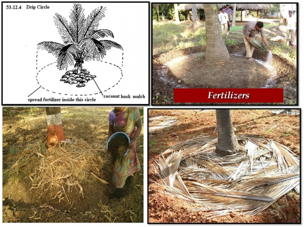

CHAPTER 08
Nutrition and Fertilizer Use of Coconut
Nutrition of Coconut
- Requires a regular supply of nutrients -> to sustain growth and continuous productivity throughout the lifespan of 60 yrs.
- Gross annual removal of macro – nutrients (of adult palm yielding 45 nuts/yr.)
- Removal of nutrients by adult palm : K > N > Mg > P (useful for determining fertilizer requirement)
- Young palms -> need more N & P (for growth and female flower production)
- Adult palms -> need more K -> (for nut production & copra out turn, larger root system to increase water uptake -> induce drought tolerance)
- Interactions:
- Between N & P -> positive interaction
- Between K & Mg -> negative interaction
- Cl : important in minimizing adverse effects of water stress on palm (in inland areas)
- For efficient uptake of fertilizer ->maintain proper balance of nutrients
| Plant Nutrient | Annual Removal | Equivalent |
|---|---|---|
| N | 770g | 1.7kg of Urea |
| P2O5 | 140g | 1.2kg of Rock Phosphate |
| K2O | 880g | 1.9kg of MOP |
| Mg | 220g | 1.8kg of Dolomite |
Sufficiency Nutrient Ranges (= critical nutrient levels)
- Important for optimum growth and production
- Determined by nutrient analysis of leaves of adult palms
- Macro-nutrients (N,P,K) -> 14th leaf
- Mg -> 14th and 6th leaves
- Micro-nutrients -> 6th leaf
Sufficiency Range of Nutrients (for tall variety)
| Macro nutrients |
Range (%DW) |
Micro nutrients | Range (%DW) |
|---|---|---|---|
| N | 1.0 – 2.1 | Cu | 12 – 14 (ppm) |
| P | 0.11 – 0.13 | Zn | 60 (ppm) |
| K | 1.21 – 1.4 | B | 08 – 10 (ppm) |
| Mg | 0.25 -0.35 | Mn | 60 – 120 (ppm) |
| Ca | 0.35 – 0.50 | Fe | 40 (ppb) |
| Na | 0.40 | Mo | 270 (ppb) |
| Cl | 0.30 – 0.60 | ||
| S | 0.15 – 0.20 |
(CRI Annual Reports 1988/89)
Nutrient Deficiencies
- Most coconut soils deficient in plant nutrients in following order:K > Mg > N > P
- K & Mg deficiency -> widespread in light sandy/lateritic gravel soils (limit optimum coconut production
- Nutrient deficiency: predispose seedlings and palms to pest & diseases. E.g.
- K deficiency -> coconut caterpillar damage
- N & Mg deficiency -> black beetle damage
Macro-nutrient Deficiencies
| Deficiency | Common in | Symptoms | Correction |
|---|---|---|---|
| K | Neglected coconut lands Sandy/lateritic soils |
Scattered rust colored spots on both side of mid rib of entire leaflet Pronounced yellowing towards tip (scorching effect)Entire crown orange –yellow, few & small fronds |
Additional dose of 500g MOP/palm |
| Mg* | Neglected coconut lands Sandy/lateritic soils |
Intense yellowing at lower end of leaflets and gradually spreading to upper parts of mature fronds Distinct green band on both side of mid rib and petiole |
Apply kieserite (24% Mg) 1kg/adult palm in every 6 months 0.5kg/young palm in 1.5 to 6 yrs. Apply 3 months after NPK application |
| N** | Uniform yellowing of entire frond, especially in older leaves Older leaves turn golden yellow reddish grey pre mature drying |
Apply 200g urea/p/yr. |
*Induced by heavy dressings of K fertilizer
**Water logging also produces symptom similar to N deficiency
Micro Nutrient Deficiencies (=trace elements)
- Nutrients required by palm in small quantities but, essential for plant growth.
- Limit growth of seedling and young palms.
- Not common in coconut (except boron in specific areas).
- Organic/ green manure is a good source of micro nutrients.
Boron deficiency
- Has been reported where coconut planted in uprooted rubber land with lateritic soil
- Symptoms:- Leaflet of young palms ( 5 years old ) malformed due to fusion of terminal leaflets and shortening length of leaflets -> crown choking
- Correction: Apply sodium tetraborate ( borax )
- Mild Symptoms: 28 g/palm
- Acute Symptoms: 56 g/palm
Zinc deficiency
- Symptoms:- Deformed tender leaves showing rosette or little leaf formatio
- Correction: Apply 20 g zinc sulphate/palm
Copper deficiency
- Symptoms:- Peripheral drying of leaf tips on young palms
- Correction: Apply 20 g copper sulphate/palm
FERTILIZER USE
- For optimum growth and production -> ensure continuous supply of macro/micro-nutrients required by palm (Regular use of inorganic fertilizer/organic
- Fertilizer use -> effective and convenient method of increasing coconut productivity
- Response for fertilizer application -> shown in 3-31/2 years after application -> which correspond with flower initiation to nut maturity period
E.g.-Poor lateritic soil in WZ -> 150% yield increase by fertilizer application-Rich loamy soils in IZ -> 20-40% yield increase - Fertilizer application for young palms -> influences vigorous growth and production in subsequent years.
- Commence bearing early (about 5 years after field planting)
- Produce regular crops in 1-2 years later
- Because of high price of chemical fertilizer, their use is closely related to price of coconut
- Palms not receiving NPK Mg fertilizer -> gradual production with time -> 70% reduction by 18th year
- Certain amount of nutrients lost by
- Leaching -> (N,K)
- Soil fixation -> (P)
- Volatilization -> (N)
- Mulching around palm -> or semi-circular trench on sloping land -> prevent loss of nutrients or application of organic manure
Fertilizer Mixture for Coconut
General fertilizer mixture
- Young palm mixture (YPM)
- YPM recommended for coconut seedlings and young palm until bearing stage.
- Approx. composition: 13% N, 12% P2O5, 17% K20.
- Urea: Saphos: MOP:: 2: 3:2 (by wt.).
- Apply ground dolomite after incorporation of YPM to soil
- Adult Palm Mixture (APM)
- Recommended for bearing palms
- Approx. composition
- N -> 12%
- P2O5 -> 6%
- K2O -> 32%
- Ratio: (by weight)
- Urea -> 8
- SP -> 3
- ERP -> 3
- MOP -> 16
- In addition apply dolomite -> few weeks after incorporation of APM
Dolomite application rates - Adult Coconut Mixture (ACM)
- An alternative mixture recommended for bearing coconut palms
- Approx. composition
- N -> 0% (need met by organic/green manure or urea)
- P2O5 -> 6%
- K2O -> 32%
- MgO -> 5%
- Easy storage (no volatile/hygroscopic)
- N – source supplied separately (as urea or as organic manure)
- Regular supply of Mg
- 50% imported SP replaced by ERP (less cost)
- Can apply at any rime
- For improved varieties -> (CRIC 60, CRIC 65)
- High yielding blocks -> 75 – 100 (nuts/palm/yr.) -> apply 1 ½ times above rate
- Urea containing NPK fertilizer mix well with soil before dolomite application
- Neglected coconut lands not manured for 5 yrs. or more ->apply 11/2 times above rate for 2 years.
| Age after transplanting | YPM (g) |
Dolomite (g) |
|---|---|---|
| 6 months | 500 | 500 |
| 1 year | 600 | 500 |
| 1 ½ years | 600 | 500 |
| 2 years | 800 | 500 |
| 2 ½ years | 800 | 500 |
| 3 years | 1000 | 500 |
| 3 ½ years | 1000 | 500 |
| 4 years up to bearing stage | 1200 | 500 |
| Soil Type | Rate (kg/palm/yr.) APM |
Rate (kg/palm/yr.) Dolomite |
|---|---|---|
| Lateritic/Quartzytic/gravel/sandy | 3 | 1 |
| Deep redish / yellow loams | 2 | 1 |
ACM application rates
| Soil type | Rate (kg/palm/yr.) ACM |
Rate (kg/palm/yr.) Urea |
Cattle manure (kg) |
Goat manure (kg) |
Poultry manure (kg) |
Glyricidia loppings (kg) |
|---|---|---|---|---|---|---|
| Lateritic/Quartzytic/gravel/sandy | 3 | 0.8 | 25 | 10 | 20 | 20 |
| Deep redish / yellow loams | 2 | 0.6 | 35 | 15 | 30 | 30 |
Benefits of ACM
Note
Fertilizer Mixtures for Toddy Tapping Palms
- Palms yielding 400 liters toddy/p/yr. -> apply 3 kg/p/yr. of following mixture.
- For palms producing toddy yield of 600 1 -> apply 1 ½ times above rate.
- Mixture: parts by eight
- U r e a -> 0 p a r t
- E R P -> p a r t s
- S P -> 2 p a r t s
- M O P -> 1 8 p a r t s
- D o l o m i t e -> 8 p a r t s
- Composition: O%N, 4% P2O5 , 36% K2 0, 5% MgO
- U r e a o r O r g a n i c m a n u r e a p p l i e d separately: 0.6 kg/ year/p
- Or organic/green manure
Fertilizer Mixtures for King Coconut Palms
- For palms yielding 75nuts/p/yr. -> apply 4.5 kg/p/yr. of following mixture
- For palms producing 100-120 nuts/p/yr. -> apply 1 ½ times above rate.
- C o m p o s i t i o n :0 % N , 4 % P 2 0 5 , 2 8 % K 2 0 , 8% MgO
Specific Fertilizer Mixture
- Location-specific fertilizer mixtures, based o n l e a f n u t r i e n t a n a l y s i s ( 1 4 t h l e a f ) a n d productivity level
- Ideal time for leaf sampling is A u g u s t / S e p t e m b e r (w h e n f l u c t u a t i o n s o fnutrients are minimal)
- Leaf samples collected from 2-3 Palms/acre and repeated once in 2yrs
- Efficient, cost-effective method
- More suitable for large coconut plantations/estates (as there is a cost involved in leave analysis)
Maintenance dose of fertilizer for different yield Categories
| Yield level (n/p/yr) |
Fertilizer rate (kg/p/yr) Urea |
Fertilizer rate (kg/p/yr) SP |
Fertilizer rate (kg/p/yr) MOP |
Fertilizer rate (kg/p/yr) Dolomite |
|---|---|---|---|---|
| 7406 | 0.8 | 0.6 | 1.6 | 1.0 |
| 7407-9875 | 0.6 | 0.6 | 1.4 | 1.0 |
| 9876-12344 | 0.7 | 0.6 | 1.6 | 1.0 |
| 12345-14812 | 0.9 | 0.7 | 1.8 | 2.0 |
| 14813-19750 | 1.0 | 0.7 | 2.0 | 2.0 |
Leaf nutrient level:
- Within sufficiency range -> apply maintenance dose (as above)
- Above sufficiency range -> apply 1/3-1/2 maintenance dose
- Below sufficiency range -> apply 1 ½ - 1 ¼ maintenance dose
Benefits:
- Optimum amounts/sources of nutrients required by palm -> saving
- Greater effect on yield over APM
- C u t t i n g d o w n a p p l i c a t i o n o f u n n e c e s s a r y fertilizer -> Reduce wastage, environmental pollution
- Mitigating occurrence of nutrient deficiencies, particularly K/Mg
Method of Fertilizer Application
- Coconut seedlings/ Young palms (Early stages (1- 1 ½ yrs.):
- Fertilizer/organic manure broadcast up to 0.3 m distance from base of palm
- Incorporated to 10-15 cm depth
- Gradually increased up to distance of 1.5 m at flowering time
- Adult palms:
- Broadcast uniforml y on soil within radius of 1.5 m from base of palm
- I n c o r p o r a t e d t o 1 0 - 1 5 c m d e p t h w i t h m a m m o t y a n d m u l c h w i t h d r i e d c o c o n u t fronds
- S t e e p s l o p e :
- F e r t i l i z e r a p p l i e d i n t o s e m i - circular trench (1m wide, 10 cm deep, and 1 m a w a y f r o m p a l m ) c u t a r o u n d p a l m o n u p -slope. Trench closed and mulched.
Time and frequency of application
- Be ginning or end of rain y season, when soil is moist
- ACM applied at any time
- Sandy soil -> fertilize after heavy rains
- Coconut seedlings/Young palms -> split application at 6 monthsintervals Adult palms -> annual application
Use of Organic/Green manure
- Fertilizer application, major component of expenditure -> (accounting for 50-60% of total COP)
- Use of organic/green manure -> supplemented with inorganic fertilizer as alternative and cheap source of supplying macro and micro-nutrients to palms.
- Application of organic with judicious use of inorganic f e r t i l i z e r -> I n t e g r a t e d P l a n t
- Nutrition System (IPNS).
- Use of bulky organic/green manure possible -> o n l y i f a v a i l a b l e w i t h i n t h e p r o p e r t y o r ne arb y
- In -situ cultivation of Gliri cidia or rearing livestock in coconut lands satisfy this requirement.
Benefit of 1PNS
- Increase coconut yield by 15-20%
- Reduce COP
- I m p r o v e s o i l p h y s i c a l p r o p e r t i e s a n d organic matter status
- Reduce leaching of nutrients (e.g. K., Mg)
- Improve N-content of top soil (15-20 cm depth)
- Maintain s o i l h e a l t h b y h a s t e n i n g microbial activity
- Potential source of micro-nutrients (e.g. Cu, Zn, B, Mn)
